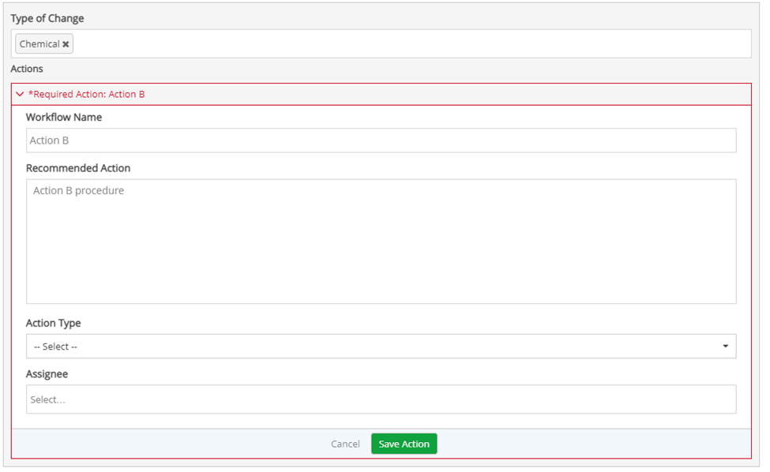
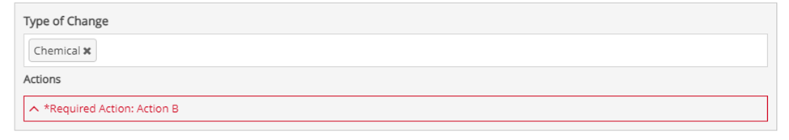
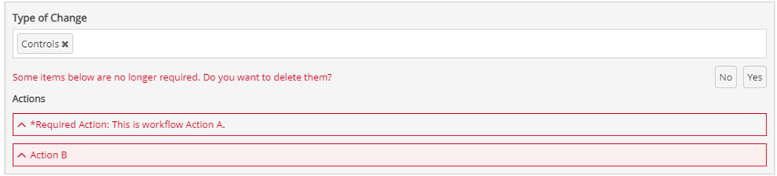
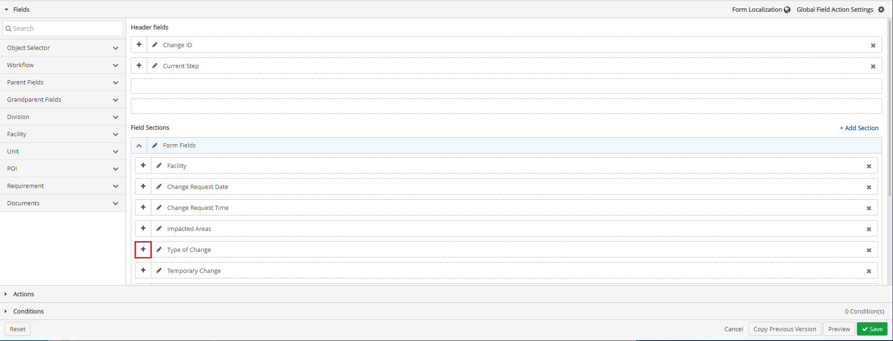
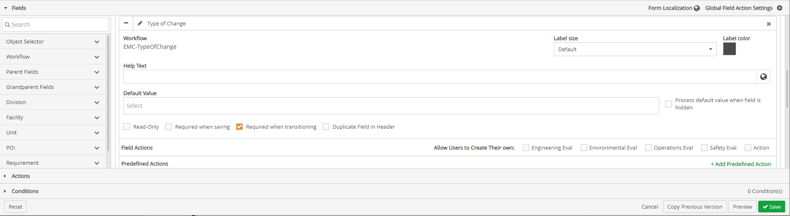

Enabling User Defined Form Fields With Predefined Required Field Actions
A predefined required field action is created when there is a mandatory course of action to follow for a particular response.
If a response for a field has not been selected, all the field actions are greyed out and are disabled.
Once a response is selected, the field actions are enabled and are now clickable.
When a response is selected that matches the criteria for a predefined required field action. The predefined required action form expands, with the header in red “Required (Field Action Name): (workflow name of the inline action)”.

Review, add an attachment and assignee if required, and click Save (name of predefined) Action.
When contracted, the header in red "Required (Field Action Name): (workflow name of the inline action)" will only appear.

Multiple predefined required actions may display for one given response.
Once you have completed the form, Click Save.
If you want to change your response to a question that has a predefined required action after clicking save, a prompt displays "Some items already created below are no longer required. Do you want to delete them?"

If you click Yes, the items outlined in red are deleted, and the prompt disappears.
If you click No, the items that were outlined in red are no longer outlined and remain as a predefined action for that question, and the prompt disappears.
Add a User Defined Form Field with Predefined Required Actions
Once Field Actions have been added, click the Fields ribbon.
The Fields ribbon expands with a menu of Field types below it, and two sections display to the right, Header Fields, and Field Sections.
Under the Field Sections, click the + icon in front of the field on the form the field action is to be added to.

The workflow form type section will expand.

To the right of the Field Action section of the workflow, navigate to Allow Users to Create Their Own.
To disable users to define actions, ensure checkboxes in front of the field actions in the Allow Users to Create Their Own section are unchecked.
If there is more than one Field Action with the same Alias on the form, a question icon will be displayed next to the duplicated icon. When users hover over the icon, the source workflow type will appear.
To create predefined actions, click + Add Predefined Action, in the Predefined Actions section. The Predefined Action window appears.
On the Add Predefined Action window a combination of source action and requirement of action are to be selected.
For source action there are two options: Existing Action or New Action.
For Requirement of action there are two options: Optional or Required. With these options four possible combinations can be created for any predefined Action.